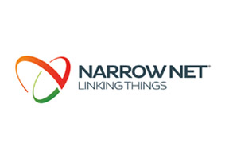
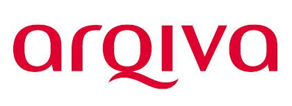
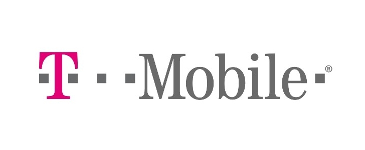

Connecting Your World to the "Internet of Things"

The "internet of things" has arrived and its changing the way people and businesses engage with the world around them.
We are the SIGFOX "internet of things" network operator in Ireland. Our SIGFOX network will allow nationwide low power connectivity to the internet in Ireland for the first time.
SIGFOX's ultra narrow band technology is allowing millions of devices to connect to the internet where long distance, low battery life and low cost are necessities.
Our open sourced but completely secure & encrypted "ultra-narrow band" SIGFOX network radically redefines internet connectivity.
The solutions impact every industry by providing an entirely new disruptive cost structure; devices have battery lives of years and annual connectivity costs are a fraction of other technologies.
Solutions are "plug & play" connecting to the network straight 'out of the box'. No need for sim cards or pairing with the network. Simply turn the devices on and send & recieve data for years. The simplicity and cost structure of the technology is allowing businesses and people to collect valuable data about their operations with minimal human interaction.
Our narrow band network will see 1 million devices connected in Ireland by 2017 across logistics, healthcare, industry, agriculture, construction, automotive, manufacturing, consumer electronics, intelligent buildings and emergency services.
SIGFOX's ultra narrow band technology allows devices to send data to the internet over long distances, with low power consumption (300 times less), at a fraction of the cost of traditional networks. |
2RN (A wholly owned subsidiary of RTE) is a communication network operator in Ireland, with a substantial portfolio of developed sites and in house engineering, planning, construction resources and capabilities. 2rn distributes and transmits the programme services of RTE Radio and Television, TV3, TG4, and Today FM. |



The SIGFOX network is fully operational in France, Spain (Abertis) & The Netherlands (Aerea). The network is currently being rolled out in UK (Arqiva), Portugal (NarrowNet), Engie (Belgium) & Czech Republic (T-Mobile). |
There will be 50 billion devices connected to the internet by 2020. The IoT era will create a new €14 trillion dollar market over the coming years.
Every sector is seeing benefits with the 'internet of things', data allows for more efficient operations, increased engagement with services and entirely new areas of revenue. Is your business ready to grow?
The disruptive benefits of SIGFOX technology has seen a rapid growth across the world and is the adopted IoT protocol for giants such as SAMSUNG, TELEFONICA, SK TELECOM and NTT DoCoMo.
VT is the SIGFOX Network Operator In Ireland. Our network is a country wide Ultra Narrow band telecoms network designed specifically for M2M & IoT communications.
About Us